⚙️ Flujo del Juego
Fase 1 - Reclutar: 13 bazas. Se revela 1 carta del mazo. El líder juega una carta, el rival debe seguir facción si puede (Regla de Arrastre). Gana la carta del centro el de valor más alto de la facción líder. El perdedor roba del mazo.
Fase 2 - Simpatizantes: 13 bazas con las cartas ganadas. Se compite por las 2 cartas jugadas. Regla de arrastre vigente.
Victoria: Ganas el voto de una facción teniendo más cartas de ella en tu pila de Simpatizantes. Gana la partida quien consiga 3 votos.
👑 Claim (Juego Base 1)
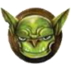
Goblins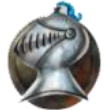
Poder: No tienen poderes especiales.
Poder: Cuando juegas un Caballero después de un Goblin, el Caballero gana automáticamente al Goblin, independientemente de su valor. Debes seguir la regla de arrastre si puedes.
Poder (Fase 2): El perdedor de la baza coloca en su pila de Simpatizantes todas las cartas de Enano jugadas. El ganador se lleva las que no sean de Enano.
Poder (Fase 1): Las cartas jugadas de No-Muertos no se descartan. Se añaden a la pila de Simpatizantes del ganador de la baza. Si una carta de No-Muerto está en el centro y es ganada, va al mazo de Seguidores.
Poder: Facción comodín. Puedes jugarlo en vez de seguir a la facción líder, aunque tengas cartas de esa facción. Se considera de la misma facción que la carta jugada por el Líder, pero NO copia sus poderes.
🗡️ Claim 2
Poder (Fase 2): Se colocan boca arriba delante de ti, no en la pila de Simpatizantes. Al final de la partida, los que queden se mueven a la pila de Simpatizantes.
Poder (Fase 2): Si ganas la baza, cada Gigante jugado puede aplastar un Gnomo del oponente del mismo valor. El Gnomo aplastado se descarta y no puntúa.
Poder: El último jugador en jugar un Dragón en una baza será el Líder de la siguiente baza, sin importar el valor o quién ganó la baza.
Poder (Fase 2): Solo se puede conseguir 1 Troll por baza. Si se juegan dos, el ganador se lleva el de mayor valor y el otro se aparta para el ganador de la siguiente baza.
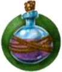
VidentesPoder (Fase 1): Si ganas la baza con una Vidente, puedes mirar la carta superior del mazo y elegir entre tomar esa o la del centro de la mesa.
⚔️ Refuerzos: Mercenarios
Poder: Al final de la partida, el jugador con MENOS cartas de Cíclope gana el voto (debes tener al menos 1). En empate, gana el de menor valor en mesa.
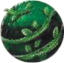
Elfos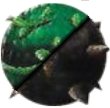
Poder: Sin poder especial
Poder: Sin poder especial.
Poder: En la Fase 1 o 2, cuando juegas una carta de doble facción, debes anunciar si la juegas como Elfo o como Orco.
En la Fase 2, si ganas esta carta, cuenta como la facción que fue anunciada al jugarla. Puedes girar la carta para indicar de qué facción es.
No cuentan como facción para la puntuación. Prevalecen sobre poderes de facciones.
Ejemplos: Bardo (líder siguiente), Arquero (gana si líder juega 5-6), Muerdevidas (copia habilidades), Gárgola (cuenta como 2 cartas de facción), Hombre Lobo (cambia valor a 5 y facción), La Muerte (nadie gana simpatizantes), etc.
✨ Refuerzos: Magia
Poder: Si ganas con un Mago, roba una carta de Poción (boca abajo). Durante otra baza puedes voltearla para alterar el valor de tu carta (suele subir, pero puede bajar).
Poder (Fase 1): Si pierdes tras jugar un Druida, se queda delante de ti girado 180º (se convierte en Oso). Tu siguiente carta jugada obtiene +3 a su valor.
Poder (Fase 1): Al jugarlo, se intercambia con la carta del centro de la mesa. Ahora competiréis por el Cambiaformas.
Se reparten 3 al inicio. Se pueden usar en cualquier momento indicado. Prevalecen sobre todo lo demás.
Ejemplos: Espada Serpiente (+3 valor), Bola Cristal (roba 3 elige 1 en Fase 1), Caballo Mago (intercambia carta jugada por mano), Botas Voladoras (+2 valor próximas 2 cartas), Anillo Nocturno (ignora obligación de seguir facción).
🗺️ Refuerzos: Mapas
Poder: Si juegas esta carta después de una del mismo valor, colocas la carta del oponente en tu pila de Simpatizantes, ganas la baza y lideras la siguiente.
Poder (Fase 2): Si pierdes jugando un Fénix, roba una carta de Fuego de Fénix a tu mano. Funciona exactamente como un Fénix normal.
Poder (Fase 2): Cada carta de Unicornio ganada aumenta el valor de las cartas de OTRA facción que juegues en +1 por Unicornio. No afecta a la puntuación final.
Edificios (Pergamino Azul): Cambian reglas de fin de partida. Ej: La Torre (suma valores en vez de contar cartas), El Monasterio (pierdes si tienes el doble de cartas).
Escenarios (Pergamino Negro): Cambian interacciones. Ej: Inframundo (0 vale 10), Costa (perdedor de baza se lleva carta del centro).
🧟 Refuerzos: Terror
Poder (Fase 2): Se colocan boca arriba. Las cartas de otras facciones ganadas se ponen DEBAJO del Vampiro. Cuentan para el voto de Vampiros, no para su facción original. Al final se suman valores.
Poder (Fase 1): Si ganas la baza con un Zombi, la carta jugada por tu oponente va a tu pila de Simpatizantes.
Poder: Se usan 2 cartas de Luna (Llena/Sin luna). Si gana la baza el Hombre Lobo, se cambia la carta de Luna. Sin luna arriba: gana el de menor valor. Luna llena arriba: gana el de mayor valor.
Poder: Se barajan las 20 y se meten 10 al azar. Nadie sabe qué valores hay en juego durante la partida.
🔥 Refuerzos: Fuego
Poder: Al jugarla solo se sabe si es Par o Impar. Su valor real se comprueba al resolver la baza.
Poder: Al jugarla solo se sabe si es Alta (5-9) o Baja (0-4). El valor se comprueba al resolver.
Poder: Hay 2 copias de cada valor. Una verdadera y una falsa (marcada con X). El engaño se comprueba al final de la partida, descartando las cartas con X.
Poder: Se ponen 3 cartas de Veneno boca arriba. Si ganas con un Envenenador puedes mirar una con el Filtro Revelador. Al final, se descartan de las pilas las cartas que coincidan con los valores de veneno revelados.
❄️ Refuerzos: Hielo
Poder: Antes de determinar el voto de la facción: descarta de la pila de simpatizantes todas las parejas de Rey del hielo/Reina del hielo que tengan el mismo valor: ¡se casan y se escapan!.
Poder: Antes de determinar el voto de la facción: descarta de la pila de simpatizantes todas las parejas de Rey del hielo/Reina del hielo que tengan el mismo valor: ¡se casan y se escapan!.
Poder: Incluso si ganas la baza con un Yeti, NO serás el Líder de la siguiente baza.
Poder (Fase 2): Si ganas la baza con esta carta, la otra carta jugada se descarta y no la colocas en tu pila de Simpatizantes.
Ejemplos: Daga del Rey (roba carta de valor 5 del rival), Linterna Eterna (roba 3 cartas y mira mano rival), Espejo Mentiras (altera valor +/-5), Espada Hielo (congela cartas y suma valores a la siguiente baza).
⛅ Refuerzos: Cielo
Poder: Al final de la partida, si no hay otras cartas en tu pila de Simpatizantes con el mismo número que una determinada carta de Ángel, esa carta cuenta x2 para determinar el apoyo de la facción.
Poder: Las Águilas no pueden liderar dos bazas consecutivas, a excepción de que el jugador únicamente tenga Águilas en la mano.
Poder: Al final de la partida, ¡todas las cartas de Pterosaurio de valor ≥ 7 se extinguen! Dichas cartas no cuentan para la determinación de la mayoría en la facción.
Poder (Fase 2): Fase 2: puedes descartar cualquier número de Elementales de Luz de tu pila de Simpatizantes para potenciar una carta jugada. Cada carta descartada potencia a la carta jugada en +1.
Poder: Al final de la partida, si ganas la mayoría en la facción de Buitres, baraja la pila de descarte de la Fase 1 y roba 2 cartas. Añade esas cartas a tus pilas de Simpatizantes correspondientes.
☀️ Refuerzos: Sol
Poder: Cuando se juega un Monje del Sol, una regla especial del arrastre obliga al otro jugador a jugar un Monje de la Estrella. Si el otro jugador acompaña correctamente, el valor más alto de ambos gana la baza. Un Monje del Sol jugado tras otro Monje del Sol se consideran de facciones distintas, ganando la baza automáticamente el primer jugador.
Poder: Cuando se juega un Monje de la Estrella, una regla especial del arrastre obliga al otro jugador a jugar un Monje del Sol. Si el otro jugador acompaña correctamente, el valor más alto de ambos gana la baza. Un Monje de la Estrella jugado tras otro Monje de la Estrella se consideran de facciones distintas, ganando la baza automáticamente el primer jugador.
Poder (Fase 2): El ganador del favor de los Profetas se determina en función del número de runas. Si hay al menos 3 runas combinadas en la pila de Simpatizantes de un jugador, el Profeta con el mayor valor gana. Si no hay menos de 3 runas, el Profeta con el menor valor gana la baza.
Las runas son iconos
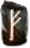
en las cartas de Profeta.Poder (Fase 2): Fases 1 y 2: cuando se juega una baza con un Gusano de Arena, se juega boca abajo. Cuando todos los jugadores han jugado carta, las cartas se revelan.
Poder (Fase 2): Cuando añades un Escorpión a tu pila de Simpatizantes, debes tomar una carta de picadura. Las cartas de picadura te darán una penalización o un bonus especial para la siguiente baza que juegues. Después, se descartan. Si el mazo de picaduras se agota, baraja el descarte para formar un nuevo mazo.
🌊 Refuerzos: Agua
Poder: Al final de la partida, si un jugador tiene un Pirata y un Royal Navy del mismo valor, el Pirata es arrestado. Dicho Pirata cuenta como una carta de Royal Navy para determinar la mayoría de la facción (ya no cuenta como Pirata).
Poder: Al final de la partida, si un jugador tiene un Pirata y un Royal Navy del mismo valor, el Pirata es arrestado. Dicho Pirata cuenta como una carta de Royal Navy para determinar la mayoría de la facción (ya no cuenta como Pirata).
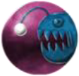
Monstruos MarinosPoder: Fase 1: si un Monstruo marino es revelado como carta central, los jugadores deben intercambiar una carta de su mano cada uno. Las cartas con el otro jugador se intercambian boca abajo.
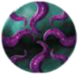
PulposPoder (Fase 2): Las cartas de valor ≥ 8 de cualquier otra facción ganan siempre a un Pulpo (tenga éste el valor que tenga).
Poder (Fases 1 y 2): Si pierdes una baza en la que jugaste un Hombre pez, toma una carta de tridente del mazo de robo o de otro jugador si el mazo de tridentes se ha agotado. El valor de todos los Hombres pez se incrementa en +1 por cada carta de tridente que poseas.
🎖️ Promo
Poder (Fase 2): Si ganas un Elfo oscuro en una baza, debes descartar y retirar del juego una carta de otra facción en tu pila de simpatizantes. Si solamente hay Elfos oscuros entre tus simpatizantes, no tienes que descartar ninguna carta. Si ganas más de un Elfo oscuro en una baza, sigues teniendo que descartar solo una carta de otra facción.
Poder (Fase 1): Puedes añadir el Fantasma a tu pila de seguidores perdiendo la carta que normalmente adquirirías, tanto si pierdes como si ganas la baza. Si ganas y te quedas con el Fantasma, ponlo en tu pila de seguidores y descarta la carta boca arriba sobre la mesa. Si pierdes y eliges quedarte con el Fantasma, ponlo en tu pila de seguidores y descarta la primera carta del mazo boca abajo (sin mirarla).
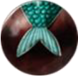
SirenasPoder (Fase 1): Cuando obtienes una Sirena para tu pila de simpatizantes, colócala boca arriba. Tus siguientes cartas jugadas obtienen -1/por cada Sirena que haya.
Poder (Fase 2): Si eres el líder y ganas la baza jugando un Minotauro, el otro jugador puede devolver la carta que jugó a su mano.
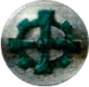
ManitasPoder (Fase 2): Si un Manitas gana a otra carta superando su valor en ≥ 4, ¡el Manitas explota! La otra carta se descarta del juego. El jugador que jugó al Manitas sigue considerándose el ganador de la baza.
Poder: Si una Valkiria se juega tras cualquier otra carta de facción y el valor de la Valkiria supera en ≥ 3 al valor de la primera carta, la Valkiria se convierte en una carta de esa otra facción a todos los efectos.
🎁 Big Box
Poder (Fase 1): Si la carta por la que los jugadores compiten es un Sátiro, el segundo jugador no tiene que seguir la regla del arrastre. El valor más alto de las cartas jugadas gana la baza, independientemente de la facción que comenzó.
Poder: Tras la Fase 1, baraja las cartas descartadas para formar un mazo de cementerio. Si en la Fase 2 ganas una baza con un Resucitador, roba una carta del mazo de cementerio y añádela a tu pila de simpatizantes.
💍 V Aniversario
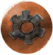
AutómatasPoder (Fase 1): Si ganas una baza con una carta de Autómata, ganas también la siguiente baza de forma automática.
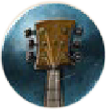
BardosPoder: El voto de los Bardos lo gana aquel jugador que tenga una mayor cantidad de Bardos de valores consecutivos. En caso de empate, gana el que tenga el Bardo de mayor valor dentro de esta serie.
Poder: Cada Mapache con  (botín) aumenta en 1 el número de cartas de la facción con menos votos que tengas.
(botín) aumenta en 1 el número de cartas de la facción con menos votos que tengas.
Poder (Fase 2): Si un jugador con Grifos en su pila de Simpatizantes juega una carta con un valor igual a uno de ellos, su valor aumenta en +5.
Poder: Una carta de Vikingo cuenta como dos votos si hay otra carta de cualquier facción el mismo valor en la pila de Simpatizantes.
Poder: Un Campesino abandona tu reino si no tienes una carta de Realeza del mismo valor o de hasta un máximo de 3 superior.
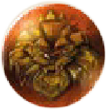
RealezaPoder: Un Campesino abandona tu reino si no tienes una carta de Realeza del mismo valor o de hasta un máximo de 3 superior.
🤝 Alianzas
Poder (Fase 1): Si ganas una baza con un Úrsido, puedes colocar la siguiente carta revelada en la parte inferior del mazo y sacar una nueva carta.
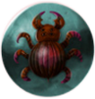
InsectoidesPoder: Al final de la partida, el Insectoide se arrastrará hasta el otro jugador si no tienes otra carta de Insectoide con un valor 1 o 2 puntos inferior o superior.